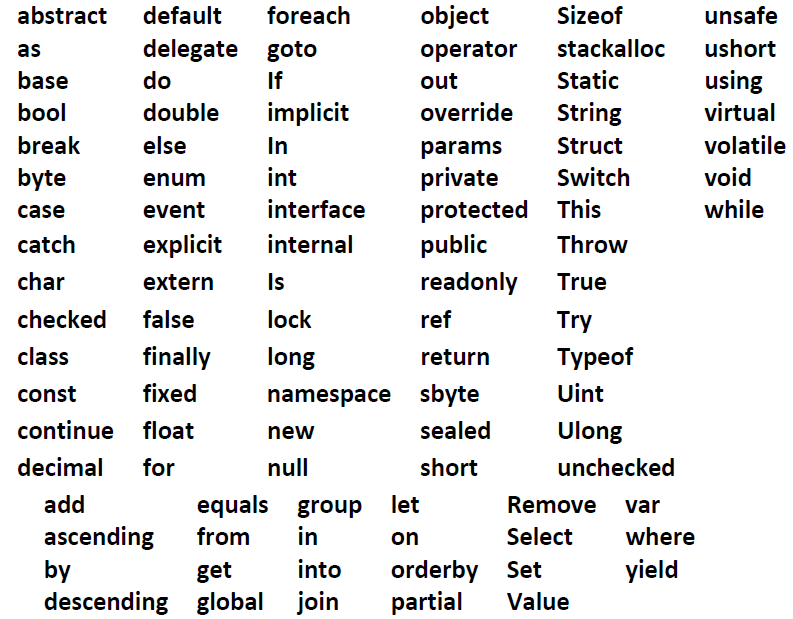
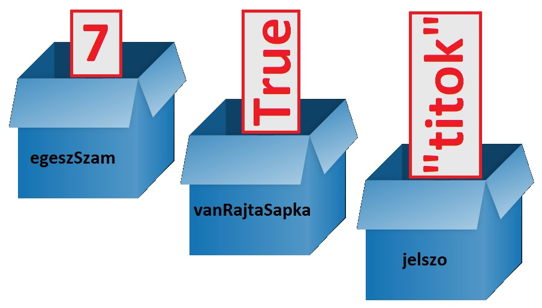

A C# szintaktikája
Amikor egy programozási nyelv szintaktikájáról beszélünk, akkor azokra a szabályokra gondolunk, amelyek
megszabják a forráskód felépítését. Ez azért fontos, mert az egyes fordítóprogramok csak ezekkel a
szabályokkal létrehozott kódot tudják értelmezni. Ha a forráskód szintaxisa nem megfelelő, a program nem
fordul le.
A C# úgynevezett C-stílusú szintaxissal rendelkezik (azaz a C programozási nyelv szintaxisát veszi alapul), ez
három fontos szabályt von maga után:
- Az egyes utasítások végén pontosvessző - ; - áll.
- A kis- és nagybetűk különböző jelentőséggel bírnak, azaz a “program” és “Program” azonosítók
különböznek. Ha a fenti kódban Console.WriteLine helyett console.writeline –t írnánk, akkor a
program nem fordulna le.
- A program egységeit (osztályok, metódusok stb.) ún. blokkokkal jelöljük ki, kapcsos zárójelek { és }
segítségével.
Kulcsszavak
Szinte minden programnyelv definiál kulcsszavakat, amelyek speciális jelentőséggel bírnak a fordító számára.
Ezeket az azonosítókat a saját meghatározott jelentésükön kívül nem lehet másra használni, ellenkező esetben
a fordító hibát jelez. Vegyünk például egy változót, aminek az “int” nevet akarjuk adni! Az “int” név is beépített
típusra utal, azaz kulcsszó, tehát nem fog lefordulni a program.
int int; //hibaaaa!!!!
A legtöbb fejlesztőeszköz (így a Visual Studio is) megszínezi a kulcsszavakat, ezért könnyű elkerülni a fenti hibát.
A C# kulcsszavai:

Ne használjuk ezeket a szavakat saját változónévként, osztályazonosítókként!
Megjegyzések
A forráskódba megjegyzéseket tehetünk. Ezzel egyrészt üzeneteket hagyhatunk (pl. egy metódus leírása)
magunknak vagy a többi fejlesztőnek, másrészt a kommentek segítségével dokumentációt tudunk generálni,
ami szintén az első célt szolgálja, csak éppen élvezhetőbb formában.
Megjegyzéseket a következőképpen hagyhatunk:
static void Main(string[] args)
{
Console.WriteLine("Hello World"); // Ez egy egysoros komment
Console.ReadKey();
/* Ez
egy
többsoros komment */
}
Az egysoros komment a saját sora legvégéig tart, míg a többsoros a “/*” és “*/” párokon belül érvényes.
Utóbbiakat nem lehet egymásba ágyazni:
/*ez egy komment
/*ez egy beágyazott komment akar lenni, de nem sikerül neki. */
*/
Ez a “kód” nem fordul le.
A kommenteket a fordító nem veszi figyelembe, tulajdonképpen a fordítóprogram első lépése, hogy a
forráskódból eltávolít minden megjegyzést.
Névterek
A .NET Framework osztálykönyvtárai szerény becslés szerint is legalább tízezer nevet, azonosítót tartalmaznak.
Ilyen nagyságrenddel elkerülhetetlen, hogy a nevek ne ismétlődjenek. Ekkor egyrészt nehéz eligazodni
közöttük, másrészt a fordító sem tudná, mikor mire gondolunk. Ennek a problémának a kiküszöbölésére hozták
létre a névterek fogalmát. Egy névtér tulajdonképpen egy virtuális doboz, amelyben a logikailag összefüggő
osztályok, metódusok stb. vannak. Nyilván könnyebb megtalálni az adatbázis-kezeléshez szükséges osztályokat,
ha valamilyen kifejező nevű névtérben vannak (pl. System.Data).
Névteret magunk is definiálhatunk a namespace kulcsszóval:
namespace MyNameSpace
{
}
Ezután a névtérre vagy a program elején a using kulcsszóval, vagy az azonosító elé írt teljes eléréssel
hivatkozhatunk:
using MyNameSpace;
//vagy
MyNameSpace.Valami
Mi főleg a System névteret fogjuk használni.
Változók
Amikor programot írunk, akkor szükség lehet tárolókra, ahová az adatainkat ideiglenesen eltároljuk. Ezeket a
tárolókat változóknak nevezzük.
A változók a memória egy (vagy több) cellájára hivatkozó leírók. Minden változónak van egy neve, ez a változónév vagy más néven azonosító.
Egy változót a következő módon hozhatunk létre C# nyelven:
Típus változónév;
például:
int egeszSzam;
bool vanRajtaSapka;
string jelszo;
A változóknak létrehozáskor adhatunk egy kezdőértéket. Ha ezt nem tesszük meg, a C# ad egy kezdőértéket. A C# által adott kezdőérték a default value.
Típus változónév = kezdőérték;
például:
int egeszSzam = 7;
bool vanRajtaSapka = True;
string jelszo = "titok";

FONTOS!!!
A változónév MINDIG betűvel kezdődik és betűvel vagy számjeggyel folytatódik.
A változónév NEM tartalmazhat szóközöket és írásjeleket.
Ajánlott olyan változónevet kitalálni, amely utal arra, amit tárolunk majd benne. Ezt nevezzük "beszédes változónév"nek.
Pl. valakinek az életkorát tárolhatjuk egy x1 nevű változóban, de nem célszerű.
Az eletkor változónév utal arra hogy ez a változó mit is tárol, ez tehát egy beszédes változónév.
A legegyszerűbb C# program
A legjobban lecsupaszított C# program így néz ki:
using System;
class Program
{
static void Main()
{
Console.WriteLine("Szia! ");
}
}
Az elkövetkezőkben ezt a kis programot fogjuk bővítgetni.